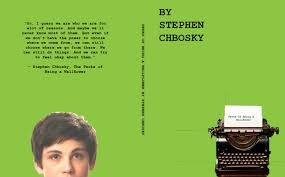

The Perks of Being a Wallflower by Stephen Chbosky is a coming-of-age tale that tells the story of Charlie, a freshman in high school still reeling from the passing of his best friend and beloved aunt. the story is told in letters, each one sent from Charlie to the reader, to whom he refers to as "friend". As the story builds, we learn more about Charlie and his past, along with his two new friends, Patrick and Sam. A heart wrenching and striking novel, The Perks of Being a Wallflower is a must read for any teenager. TW//this book contains graphic depictions of suicide, abuse, self harm, sex, and drugs, so it is not for younger teens and children under 16
